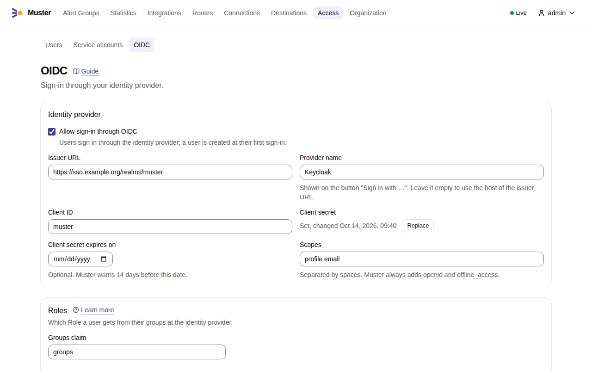
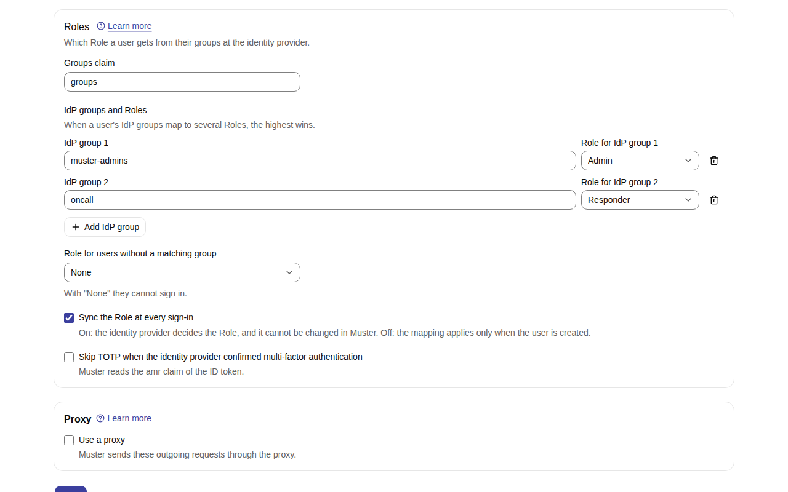

Sign-in with Keycloak¶
This page sets up sign-in through Keycloak with OpenID Connect (OIDC). Other identity
providers work the same way: Muster needs a confidential client with the authorization code flow, a claim that lists
the person's groups, and, for the background re-checks, the scope offline_access.
Muster talks to Keycloak over the back channel: it fetches the provider metadata (discovery) and the signing keys, and exchanges the authorization code for tokens itself. Muster must therefore reach Keycloak over the network, directly or through the proxy of the OIDC settings. If it cannot — Keycloak sits in a closed network and Muster outside it — use local users with TOTP instead.
In the examples, Keycloak runs at https://keycloak.example.org with the realm ops, and MUSTER_PUBLIC_URL is
https://muster.example.org.
1. Create the client¶
In the Keycloak admin console, open the realm, then Clients → Create client:
| Setting | Value |
|---|---|
| Client type | OpenID Connect |
| Client ID | muster |
| Client authentication | On (a confidential client with a client secret) |
| Authentication flow | Standard flow only; switch off Direct access grants, Implicit flow and Service accounts |
| Valid redirect URIs | https://muster.example.org/api/v1/sessions/oidc/callback and https://muster.example.org/api/v1/me/oidc-identity/callback |
| Web origins | leave empty: the browser never calls Keycloak from Muster's pages |
Both redirect URIs are MUSTER_PUBLIC_URL followed by a path: /api/v1/sessions/oidc/callback ends a sign-in, and
/api/v1/me/oidc-identity/callback ends linking an existing account to Keycloak from its profile. Register both, with
exactly the scheme, host and port of MUSTER_PUBLIC_URL.
Under Advanced → Advanced settings, set Proof Key for Code Exchange Code Challenge Method to S256. Muster
always sends a PKCE challenge, so this only makes Keycloak insist on it.
Then open Credentials and copy the Client secret. Note when it expires, if your realm rotates client secrets:
Muster warns two weeks before the date you enter (oidc.secret_expiry_lead).
2. Add the groups claim¶
Muster gives each person a Role from their groups. Keycloak puts groups into tokens only through a mapper:
- Open the client → Client scopes →
muster-dedicated→ Add mapper → By configuration → Group Membership. - Set Name to
groupsand Token Claim Name togroups. - Switch Full group path off, so that the claim carries
oncallrather than/oncall. - Switch on Add to ID token and Add to userinfo.
Muster reads the groups from the ID token, and from the userinfo endpoint when the ID token lacks the claim; the
userinfo answer must be plain JSON, not a signed JWT. The name of the claim is the Groups claim of the OIDC
settings; it is groups unless you change both.
3. Allow offline_access¶
Muster asks for the scope offline_access at every sign-in, besides the scopes of the settings. With it, Keycloak
returns an offline token, which Muster keeps encrypted and uses to re-check every OIDC user in the background
every 15 minutes (auth.oidc_recheck_interval): a person disabled or removed in Keycloak loses their Muster sessions
at the next re-check, without waiting for them to end.
To allow it:
- Make sure the realm role
offline_accessis a default role of the realm (Realm settings → User registration → Default roles), which it is in a new realm, or give it to the groups that use Muster. - Open the client → Client scopes and check that the client scope
offline_accessis assigned as Optional.
Without offline_access¶
Sign-in still works when Keycloak does not grant offline_access, but Muster cannot re-check the person in the
background:
- there are no background re-checks for them;
- each of their OIDC sessions ends
auth.oidc_fallback_session_lifetime(12 hours) after sign-in, even while in use, so that a person disabled in Keycloak is signed out within that time; - their Personal access tokens work only while their last OIDC sign-in is within
auth.oidc_token_grace(7 days); after that, the tokens are refused until they sign in through OIDC again.
4. Configure Muster¶
Sign in to Muster as an Admin and open OIDC settings, or use PUT /api/v1/oidc-settings:
| Setting | Value |
|---|---|
| Issuer URL | https://keycloak.example.org/realms/ops — the issuer of https://keycloak.example.org/realms/ops/.well-known/openid-configuration. Use https: over http the client secret and the tokens cross the network in clear text |
| Client ID | muster |
| Client secret | the secret of step 1; it is write-only: Muster shows only whether it is set and when it changed |
| Client secret expires on | the expiry date of the secret, if it has one |
| Display name | the name on the button "Sign in with {name}"; by default the host of the issuer URL |
| Scopes | profile email; openid and offline_access are always added |
| Groups claim | groups |
| Group mapping | for example muster-admins → Admin, oncall → Responder; when a person's groups map to several Roles, the highest wins |
| Role for users without a matching group | none (the default) refuses their sign-in; Viewer or Responder lets them in |
| Sync Role at sign-in | on (the default): Keycloak decides the Role at every sign-in and re-check; off: the mapping applies only when the user is created |
| Skip TOTP when the IdP asserted MFA | off by default; on skips Muster's own TOTP step when the ID token's amr claim says that Keycloak used multi-factor authentication. Keycloak sends amr only when the client has an Authentication Method Reference (AMR) mapper |
| Proxy | the HTTP, HTTPS or SOCKS5 proxy through which Muster reaches Keycloak, if it needs one |
The settings behind the three rows above Proxy are oidc.unmatched_role (none: sign-in is refused), oidc.sync_role
(on) and
oidc.skip_totp_with_idp_mfa (off).
In the web UI:
-
Open Access → OIDC. Under Identity provider, turn on Allow sign-in through OIDC and fill in the Issuer URL, the Provider name (the display name), the Client ID, the Client secret — Set a value, or Replace once one is set —, Client secret expires on and the Scopes.

-
Under Roles, enter the Groups claim and map each group with Add IdP group: the group's name and its Role. Choose the Role for users without a matching group, and whether to Sync the Role at every sign-in and to Skip TOTP when the identity provider confirmed multi-factor authentication. Set the proxy below if Muster needs one, and select Save.

The screenshots show the form filled in, before Save.
Then press Check connection. The check fetches discovery through the saved settings and proxy and shows how the
request travelled (direct or proxy), how long it took and the endpoints Keycloak announced. When the outbound
address policy blocks Keycloak or the proxy, the error names the rule.
Keycloak lists only standard claims in claims_supported, so the check shows the warning Nobody will be able to sign
in through OIDC (groups_claim_missing) although the mapper of step 2 exists. The warning goes away at the first
sign-in whose token carries the groups claim. If it stays, the mapper is missing or not added to the ID token.
The settings also warn when the mapping is empty and users without a matching group get no Role
(nobody_can_sign_in), and two weeks before the client secret expires.
5. Sign in¶
Open Muster and press Sign in with {display name}. The first sign-in of a person creates their Muster user with
the Role of their groups. The login is Keycloak's preferred_username, else the email, else the subject. Muster never
merges accounts by login or email: when a local user already has the login, the sign-in is refused with "An account
with this login already exists. Sign in with it and link OIDC in your profile."
A person whose groups map to no Role is refused with "You have no access to Muster. Contact your administrator.", and
the Audit log entry session.oidc_refused lists the groups their token carried. A user with TOTP gives the code after
Keycloak, unless Keycloak asserted multi-factor authentication and the setting above skips it.
Other errors on the sign-in page: account_disabled (the Muster user is disabled or deleted), oidc_disabled (OIDC
was switched off), invalid_request (the sign-in took longer than 10 minutes, oidc.auth_request_ttl, or was
started in another browser) and idp_error (Keycloak reported an error, could not be reached, or answered with a
token that did not verify; the log event oidc_sign_in_failed says which).
When Muster cannot reach the identity provider¶
OIDC needs the back channel from Muster to Keycloak. When Keycloak is inside a closed network that Muster cannot reach, even through a proxy, use local users instead:
- an Admin creates each user and hands over the one-time password setup link (Users → Create);
- set Organization → Security → TOTP required to everyone, so that every user enrols TOTP at their first sign-in.
Local sign-in is always available, also next to OIDC, and the bootstrap Admin or muster admin reset-password --actor
<name> lets an operator in when the OIDC settings are broken.